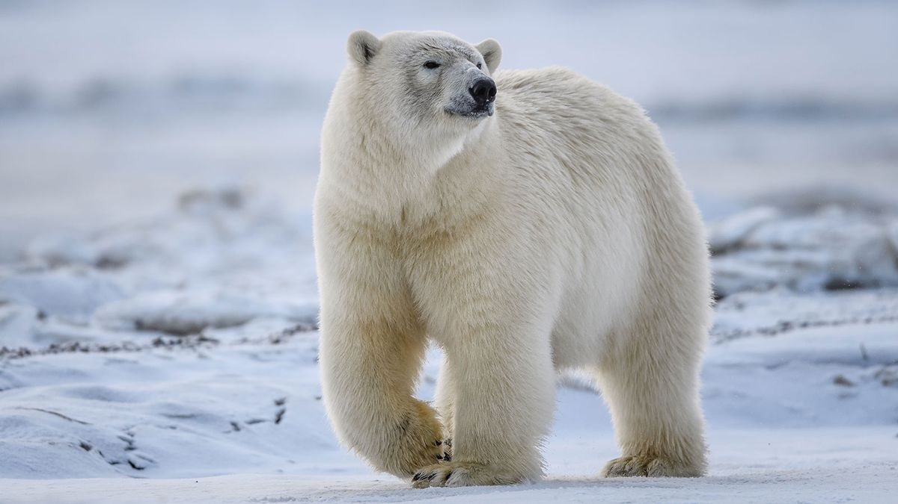

The Polar Bear is a type of bear which largely populates the Arctic Circle and the Arctic Ocean. It is the largest extant carnivore on land. It is also sadly on the list of vulnerable animals, as global warming has began destroying it's natural habitat.
Some Of it's characteristics are: